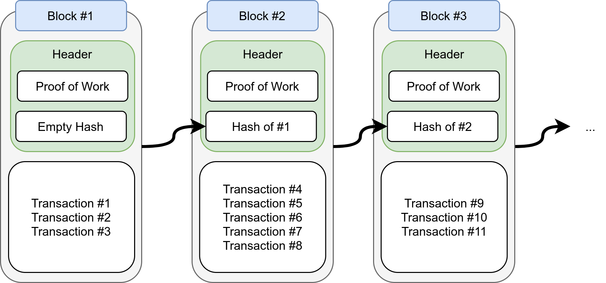
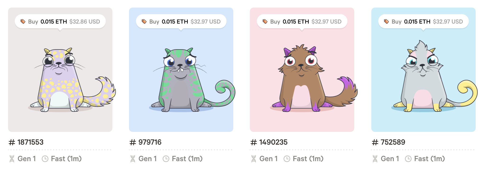
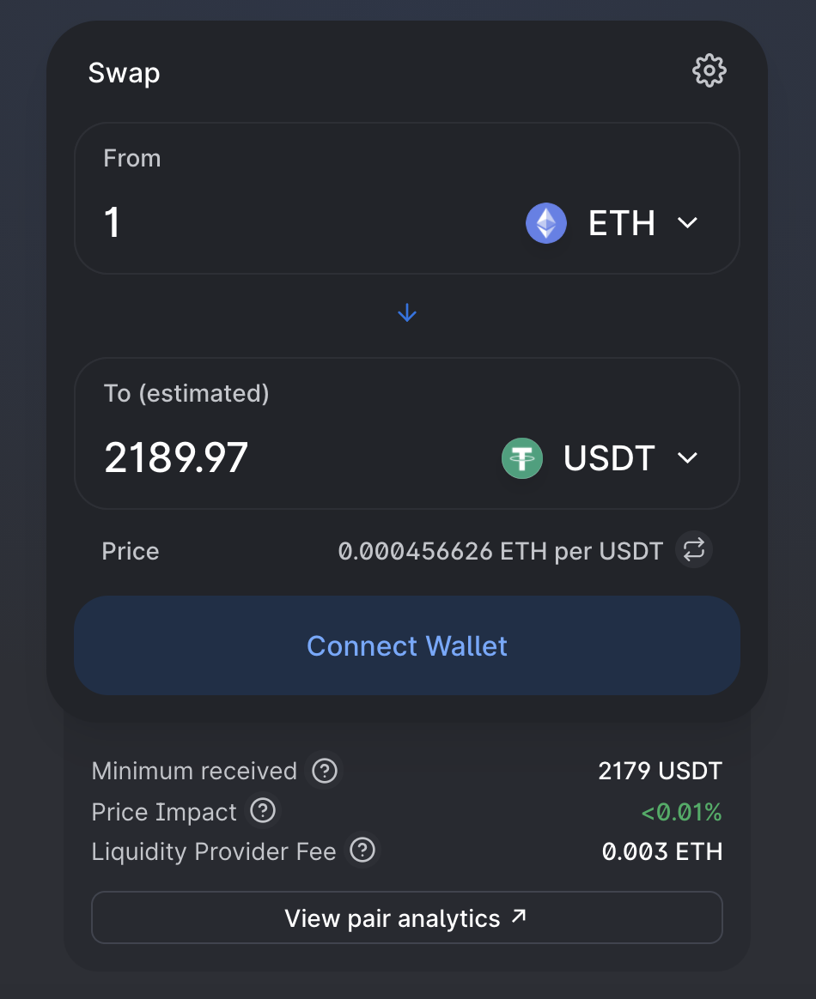
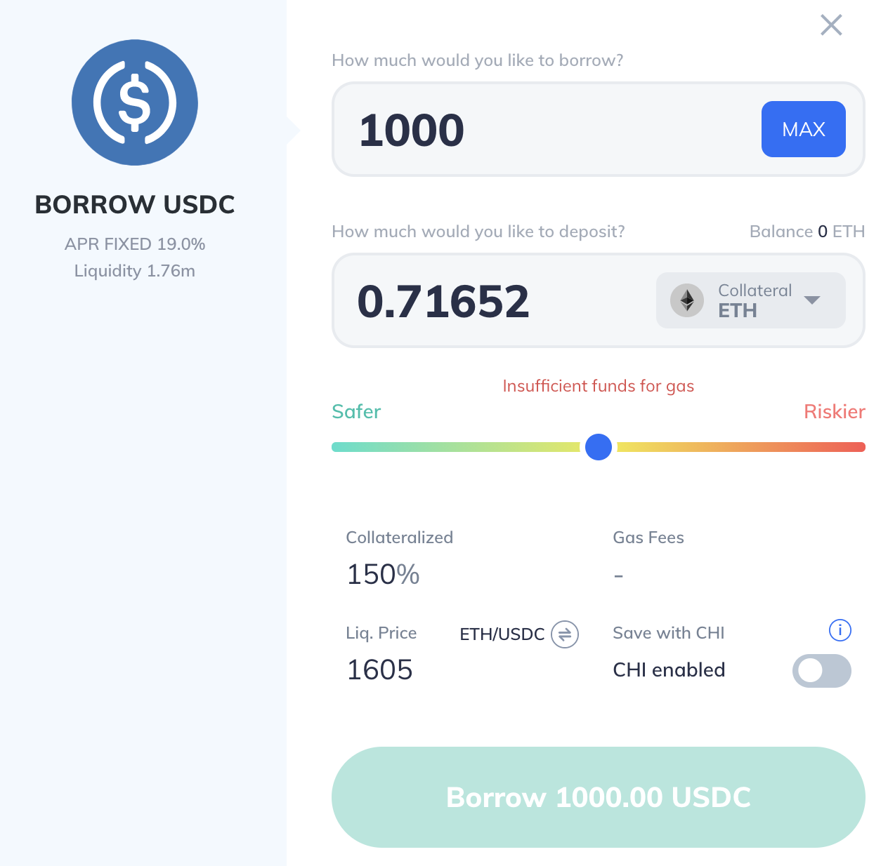
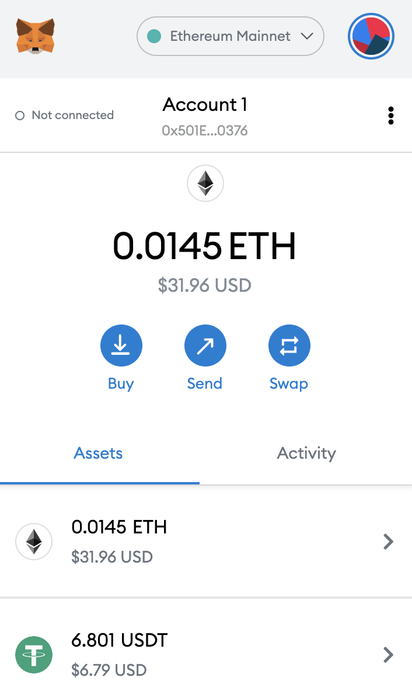

Một số xu hướng phát triển blockchain năm 2023
Các công nghệ mới trong phát triển phần mềm
Trợ giảng: Đỗ Nguyên Kha
Học kỳ 2/2022-2023 @ FIT-HCMUS
Kha Do
Teaching Assistant @ FIT-HCMUS
Former Blockchain Engineer @ FTX/Liquid/QUOINE
Từ chối trách nhiệm
- Nội dung trong bài giảng được tạo ra với mục đích học tập và nghiên cứu, không cung cấp bất kỳ việc tư vấn đầu tư hoặc pháp lý.
- Quan điểm cá nhân được chia sẻ không phản ánh quan điểm của người sử dụng lao động.
Nội dung
- Tổng quan
- Smart Contract
- ERC20 - Token Standard
- ERC721 - Non-Fungible Token Standard
- DeFi
- Layer 2
Blockchain
Chuỗi khối
Nguồn Medium
Consensus (sự đồng thuận) được dựa trên những cơ chế: Proof-of-Word (PoW), Proof-of-Stake (PoS) khi dữ liệu được thêm thêm vào blockchain
Crypotocurrency
Tiền mã hóa

Nguồn RSI Security
Smart Contract
Hợp đồng thông minh
Chương trình được gọi thực thi nhằm thay đổi trạng thái (dữ liệu) của blockchain.
ERC20
Tiêu chuẩn của token trên blockchain Ethereum. Smart contract được xây dựng bao gồm những phương thức cơ bản để phát hành/chuyển/nhận/hủy token.
Tham khảo: OpenZeppelin ERC20
NFT
Non-Fungible Token
Crypto Kitties, Open Sea...

Tham khảo: OpenZeppelin ERC721
DeFi
Decentralized Finance - Tài chính phi tập trung
- Người dùng trao đổi (swap), vay (borrow), cho vay (lend), sinh lãi dựa trên tài sản thế chấp chính là cryptocurrency.
- Sự phi tập trung do các hoạt động được thực thi qua các tương tác với smart contract thay thế cho một tổ chức tập trung (ngân hàng, sàn giao dịch...).
- Các hoạt động tự do chỉ bị ràng buộc bởi chính các quy tắc của smart contract đi kèm rủi ro (lỗi lập trình) và các hoạt động bất hợp pháp có thể không được ngăn chặn.
Trao đổi
Uniswap, 1inch, Sushiswap, Balancer, 0x...

Cho vay
Compound, AAVE, Fulcrum...

ChainLink Oracle
Cung cấp thông tin giá hỗ trợ cho DeFi
Tham khảo: Using Data Feeds on EVM Chains
Wallet
Hot vs. Cold Wallet
Custodial vs. Non-Custodial Wallet

Layer 2
Wrapped BTC, RenVM...

Nguồn Medium